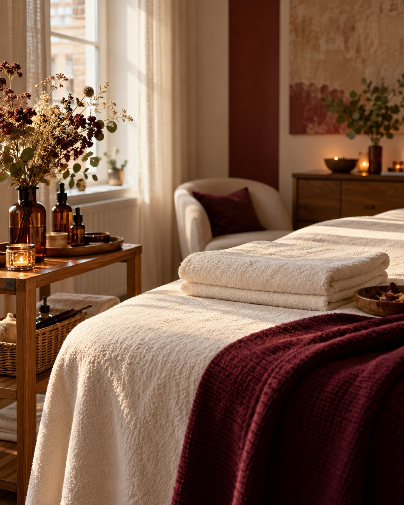
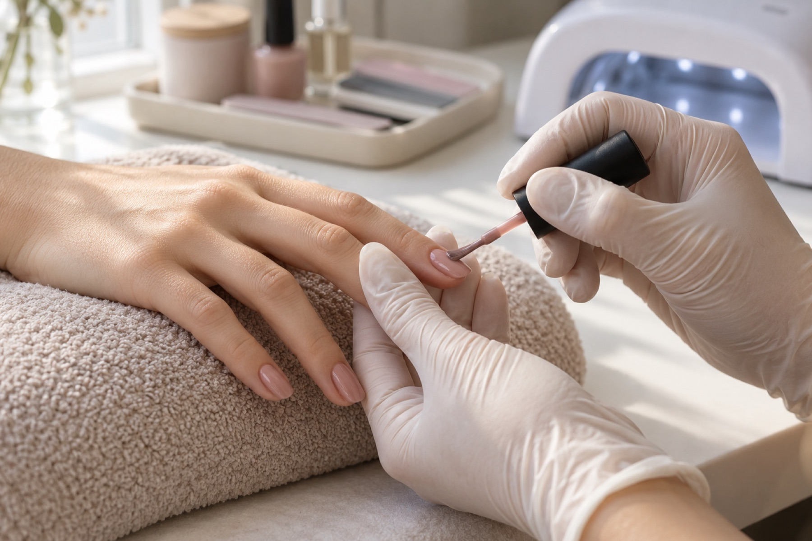
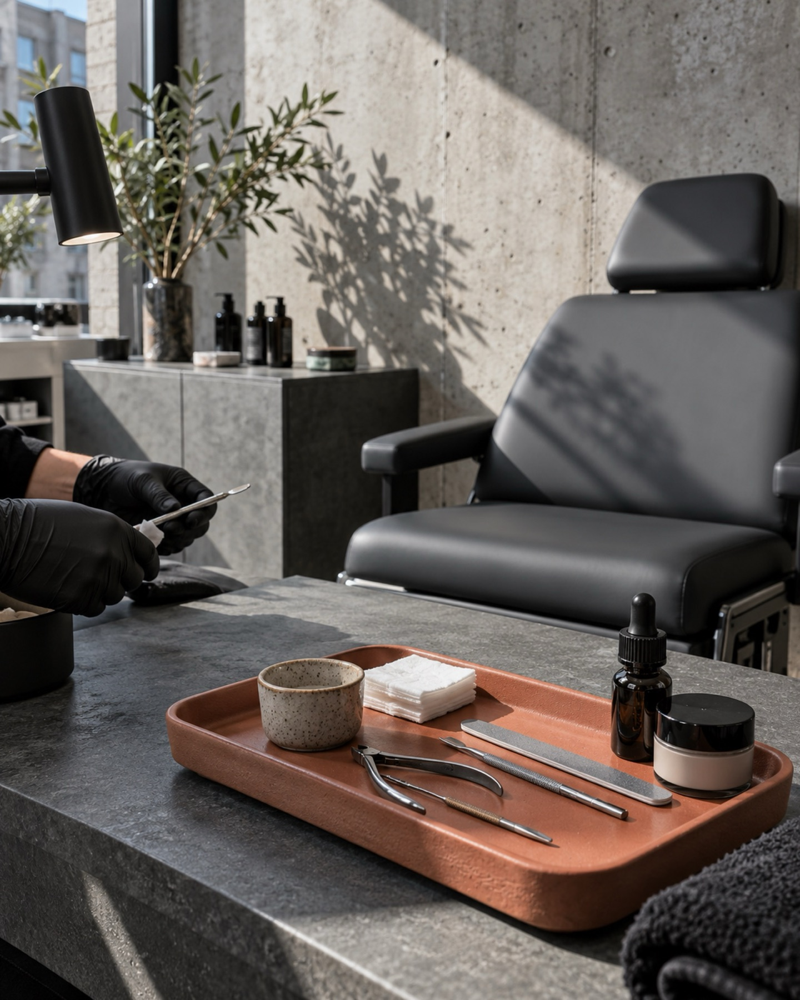

Kosmetik- und Nagelstudio · Berlin-Tempelhof
Gepflegt aussehen. Sich wohlfühlen.
Kosmetik, Nageldesign und Fußpflege in Berlin-Tempelhof, mit Zeit für Ihre Haut und Ihre Wünsche.

Leistungen
Pflege für Haut, Hände und Füße
Schönheit beginnt mit Pflege. Gesundheit und Wohlbefinden bauen auf täglicher Pflege auf. Gepflegte Menschen fühlen sich selbstbewusster und sind für jede Lebensphase optimal vorbereitet.
Ihre Haut im Fokus
Hautanalyse
Der erste Schritt zu einer wirksamen Behandlung ist eine professionelle Hautanalyse. Unsere typgerechten Wohlfühlbehandlungen kombinieren die Kraft innovativer Technologien mit hochwertigen Wirkstoffen, individuell abgestimmt auf Ihre Bedürfnisse, für Frauen und Männer gleichermaßen.
Peelings
Peelings wie BioRePeel oder mit Fruchtsäure, abgestimmt auf Ihren Hauttyp. Wir beraten Sie, welche Anwendung zu Ihrer Haut passt.
Anti-Aging und apparative Kosmetologie
Bereits ab 20 Jahren lohnt es sich, der Haut mit Anti-Aging-Pflege Kraft und Widerstandsfähigkeit zu verleihen. Wir bieten Ihnen eine breite Auswahl an hochmodernen, apparativen Behandlungsmethoden, die gezielt auf Ihre Hautbedürfnisse abgestimmt sind, von Anti-Aging-Anwendungen über Ultraschallbehandlungen bis hin zu innovativen Technologien für die Hautregeneration.
Schöne Hände als Ihre Visitenkarte
Nageldesign und Maniküre
Ein gepflegter Körper wird durch perfekte Hände ergänzt. Mit kreativem Nageldesign, das Stil und Individualität unterstreicht, verwandeln wir Ihre Nägel in echte Kunstwerke, ob natürlich oder extravagant. Lassen Sie sich von unserer Nail-Art-Kunst begeistern.
Gellack
Farbe und Glanz für Ihre Nägel, passend zu Ihrem Stil, von dezent bis auffällig.
Gepflegt von Kopf bis Fuß
Fußpflege und Pediküre
Gönnen Sie Ihren Füßen etwas Gutes: Fußpflege in Tempelhof, sorgfältig und in ruhiger Atmosphäre.
Wimpernverlängerung
Lange, dichte und perfekt geschwungene Wimpern machen den Blick unwiderstehlich. Unser professionelles Team bietet individuelle Wimpernverlängerung und -verdichtung, abgestimmt auf Ihren Stil, ob natürlicher Look oder glamouröse Ausstrahlung.

Das Studio
Höchste Standards für Ihr Wohlbefinden
Tauchen Sie ein in die Welt von Erholung, Pflege, Entspannung und Schönheit im Kosmetik- und Nagelstudio „Kaiserin“ in Berlin-Tempelhof. Lassen Sie sich verwöhnen und vertrauen Sie auf die langjährige Erfahrung des Teams, unterstützt durch modernste Kosmetik-Technologien.
In unserem Studio erwarten Sie höchste Ansprüche an Qualität, Hygiene und Professionalität. Wir freuen uns auf Ihren Besuch!
- Beratung vor jeder Behandlung
- Sorgfältige Hygiene
- Termine nach Vereinbarung
Ablauf
Ihr Termin in drei Schritten
-
Anfrage
Sie schicken uns eine Terminanfrage oder rufen uns an. Wir finden gemeinsam einen Termin, der zu Ihnen passt.
-
Beratung und Hautanalyse
Vor Ort sprechen wir über Ihre Wünsche. Bei Gesichtsbehandlungen beginnen wir mit einer Hautanalyse.
-
Behandlung und Pflegetipp
Wir behandeln in Ruhe und geben Ihnen zum Abschluss einen Pflegetipp für zu Hause mit.
Einblicke
Atmosphäre im Studio

Bewertungen
Das sagt Google über uns
4,2 ★ 39 Google-BewertungenBewertungen auf Google ansehenDas perfekte Geschenk
Sie suchen ein Geschenk zum Geburtstag, zu Weihnachten, zum Muttertag oder einfach für zwischendurch? Zu den Gutscheinen
Fragen
Häufige Fragen
Wie bereite ich mich auf den Termin vor?
Sie müssen nichts Besonderes mitbringen. Kommen Sie am besten ungeschminkt zur Gesichtsbehandlung. Teilen Sie uns Allergien oder Hautempfindlichkeiten gern vorab mit.
Wie lange dauert eine Behandlung?
Das hängt von der Behandlung ab. Bei der Terminvereinbarung nennen wir Ihnen die voraussichtliche Dauer, damit Sie entspannt planen können.
Was muss ich nach der Behandlung beachten?
Wir geben Ihnen im Anschluss persönliche Pflegetipps mit. Nach einem Peeling empfehlen wir zum Beispiel konsequenten Sonnenschutz.
Was gilt, wenn ich einen Termin absagen muss?
Bitte sagen Sie Ihren Termin so früh wie möglich telefonisch unter 030 83102456 ab, damit wir den Platz weitergeben können.
Kontakt und Anfahrt
Besuchen Sie uns in Tempelhof
- Adresse
- Kosmetikstudio Kaiserin
Kaiserin-Augusta-Straße 83
12099 Berlin - Öffnungszeiten
- Montag bis Freitag, 9:00 bis 18:00 Uhr
- Telefon
- 030 83102456